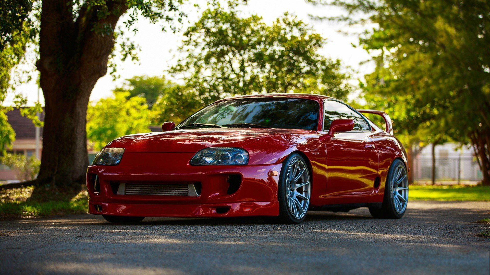
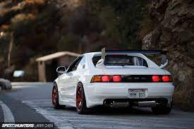
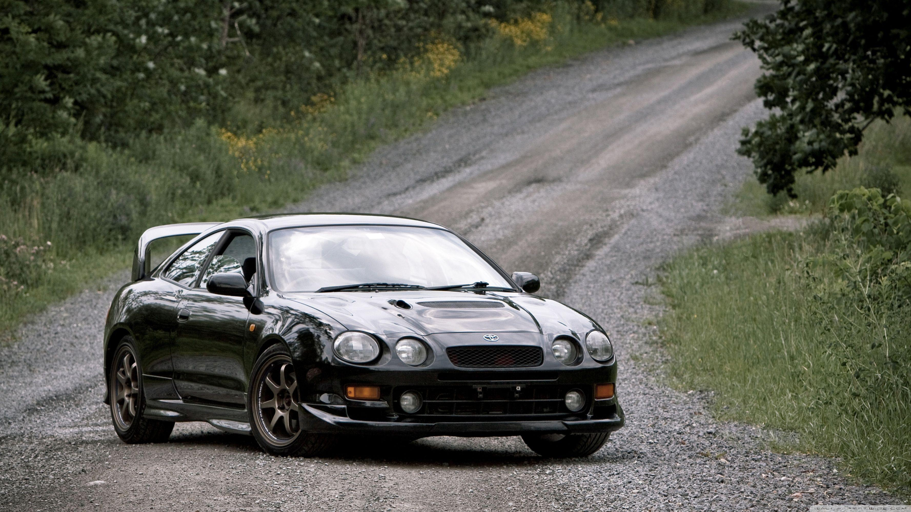

Home
Information
Table Stats
Home
Information
Table Stats
| Name Of Car | Price | Horsepower | Year(s) of Production | Image |
|---|---|---|---|---|
| Supra MkIV 1993 | £82,439 | 280 Horsepower | 1993 to 2002 |  |
| GT2000 | £640,000 | 150 Horsepower | 1967 to 1970 |  |
| MR2 Mk2 | £20,000 | 154 Horsepower | 1996 to 1999 |  |
| Celica GT-Four (ST205) | £25,000 | 170 Horsepower | 1994 to 1999 |  |
Toyota Motor Corporation is a Japanese multinational automotive manufacturer headquartered in Toyota City, Aichi, Japan. It was founded by Kiichiro Toyoda and incorporated on August 28, 1937. Toyota is one of the largest automobile manufacturers in the world, producing about 10 million vehicles per year. Toyota Motor Corporation (Japanese: トヨタ自動車株式会社, Hepburn: Toyota Jidōsha kabushikigaisha, IPA: [toꜜjota], English: /tɔɪˈjoʊtə/, commonly known as simply Toyota) is a Japanese multinational automotive manufacturer headquartered in Toyota City, Aichi, Japan. It was founded by Kiichiro Toyoda and incorporated on August 28, 1937. Toyota is one of the largest automobile manufacturers in the world, producing about 10 million vehicles per year. The company was originally founded as a spinoff of Toyota Industries, a machine maker started by Sakichi Toyoda, Kiichiro's father. Both companies are now part of the Toyota Group, one of the largest conglomerates in the world. While still a department of Toyota Industries, the company developed its first product, the Type A engine in 1934 and its first passenger car in 1936, the Toyota AA.